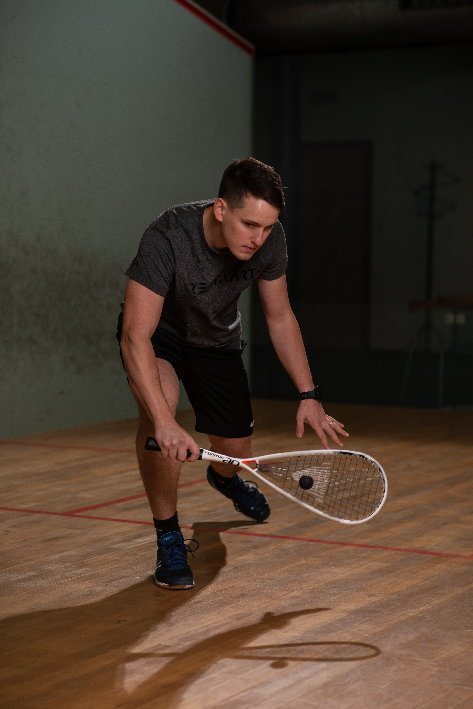

O mně
Jmenuji se Lukáš Levínský a živím se jako trenér squashe v Praze.
Vystudoval jsem Vysokou školu tělesné výchovy a sportu Palestra a od roku 2010 se věnuji trénování squashe. S aktivním hraním squashe jsem začal v roce 1999 a stále jsem aktivním hráčem a členem Squashové akademie.
Jsem držitelem bronzové medaile z ME juniorů družstev do 19 let a s týmem Buldoci Praha jsem dosáhl 2x celkového vítězství v extralize družstev mužů. Jsem držitelem trenérské licence ESF Level 2 (2. nejlepší licence v Evropě) a od října 2017 je trénování squashe mojí profesí.
Fotogalerie